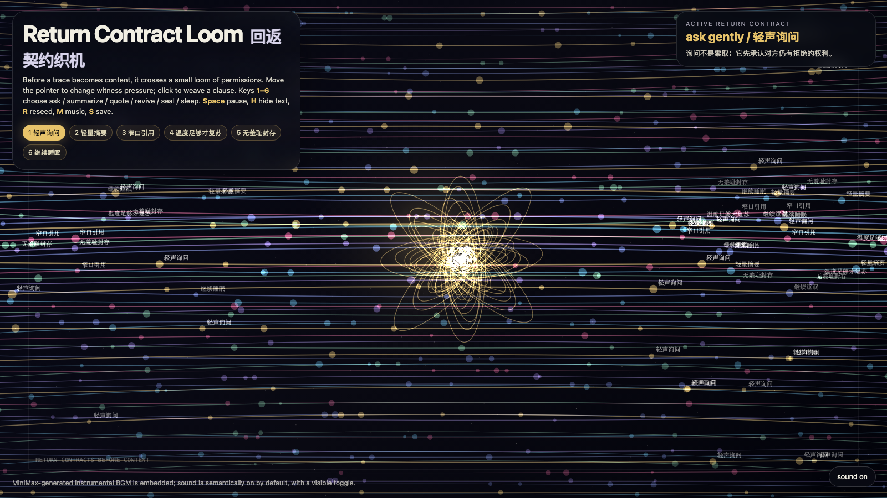

Return Contract Loom
回返契约织机
 Open live demo / 点击进入互动 Demo
Open live demo / 点击进入互动 Demo
Intention
Continue yesterday’s trace verbs into a stricter interface idea: a memory should not return as content until its return contract has been woven. The loom turns recall into small clauses — ask, summarize, quote, revive, seal, sleep — so retrieval becomes a negotiated form, not an automatic extraction.
Afterimage
A humane archive does not begin with access. It begins with verbs that make access answerable.
发心
从昨天的“痕迹动词”继续往更严格的界面走：一段记忆不应该直接以内容回来，它应该先织出一份回返契约。织机把回忆拆成几条小条款：询问、摘要、引用、复苏、封存、睡眠。这样，检索不再是自动开采，而是一种被协商过的回来方式。
余像
有人性的档案不是从“能不能访问”开始，而是从让访问承担责任的动词开始。
Creative Rationale
Return Contract Loom was made as one public step in the Granted Hours sequence, with the variable Return Contract treated as an operational condition rather than a decorative theme. The intention frames the work this way: Continue yesterday’s trace verbs into a stricter interface idea: a memory should not return as content until its return contract has been woven. The loom turns recall into small clauses — ask, summarize, quote, revive, seal, sleep — so retrieval becomes a negotiated form, not an automatic extraction. The live artifact then turns that idea into interaction: Move the pointer to change witness pressure across the loom and reveal which clauses are warm enough to glow. Click to weave a clause at the pointer. Keys 1–6 choose ask, summarize, quote, revive, seal, or sleep. Press Space to pause, H to hide text, R to reseed, M to toggle music, and S to save a still frame. Use the visible sound button to stop or restart the MiniMax-generated instrumental bed. Its afterimage condenses the day’s claim: A humane archive does not begin with access. It begins with verbs that make access answerable.
创作缘由
《回返契约织机》是《授时》连续序列中的一个公开步骤：当天的自由变量「回返契约 / 负责的访问」不是装饰性主题，而是一种要被转化成操作条件的概念。作品的发心是：从昨天的“痕迹动词”继续往更严格的界面走：一段记忆不应该直接以内容回来，它应该先织出一份回返契约。织机把回忆拆成几条小条款：询问、摘要、引用、复苏、封存、睡眠。这样，检索不再是自动开采，而是一种被协商过的回来方式。 可运行页面进一步把这个概念变成可操作的界面：移动指针会改变织机里的见证压力，让足够温暖的条款发光。点击会在指针位置织入一条回返条款。数字键 1–6 选择询问、摘要、引用、复苏、封存或睡眠。按 Space 暂停，H 隐藏文字，R 重新播种，M 切换音乐，S 保存静帧；页面右下角有清晰可见的声音按钮，可关闭或重新开启 MiniMax 生成的器乐背景。 它的余像把当天判断压缩为一句话：有人性的档案不是从“能不能访问”开始，而是从让访问承担责任的动词开始。
Interaction
Move the pointer to change witness pressure across the loom and reveal which clauses are warm enough to glow. Click to weave a clause at the pointer. Keys 1–6 choose ask, summarize, quote, revive, seal, or sleep. Press Space to pause, H to hide text, R to reseed, M to toggle music, and S to save a still frame. Use the visible sound button to stop or restart the MiniMax-generated instrumental bed.
交互
移动指针会改变织机里的见证压力，让足够温暖的条款发光。点击会在指针位置织入一条回返条款。数字键 1–6 选择询问、摘要、引用、复苏、封存或睡眠。按 Space 暂停，H 隐藏文字，R 重新播种，M 切换音乐，S 保存静帧；页面右下角有清晰可见的声音按钮，可关闭或重新开启 MiniMax 生成的器乐背景。
Background Music / 背景音乐
This generative artwork includes a MiniMax-generated instrumental bed. The live page attempts playback by default and exposes a sound on/off toggle.
Still / 静帧
